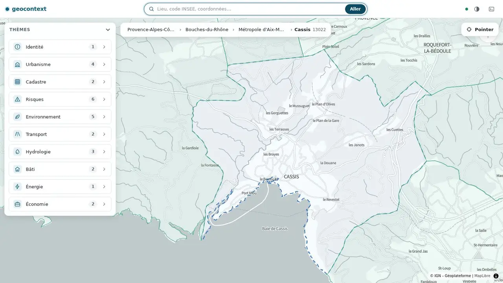
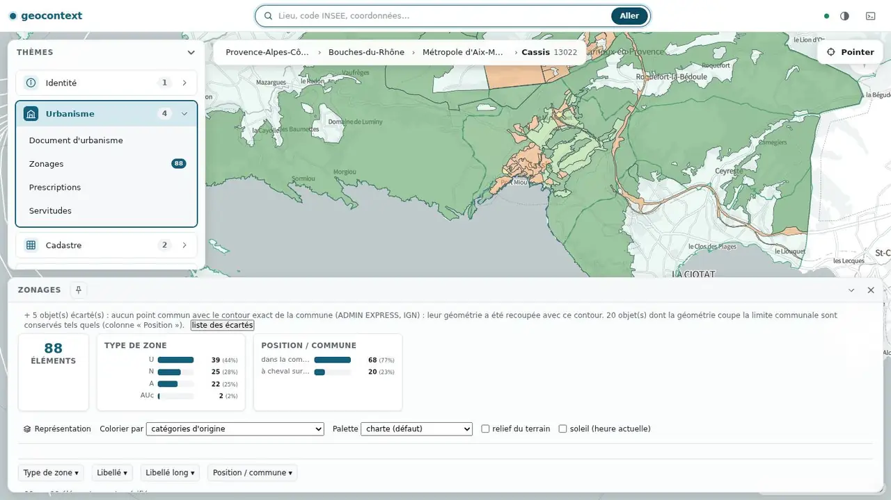
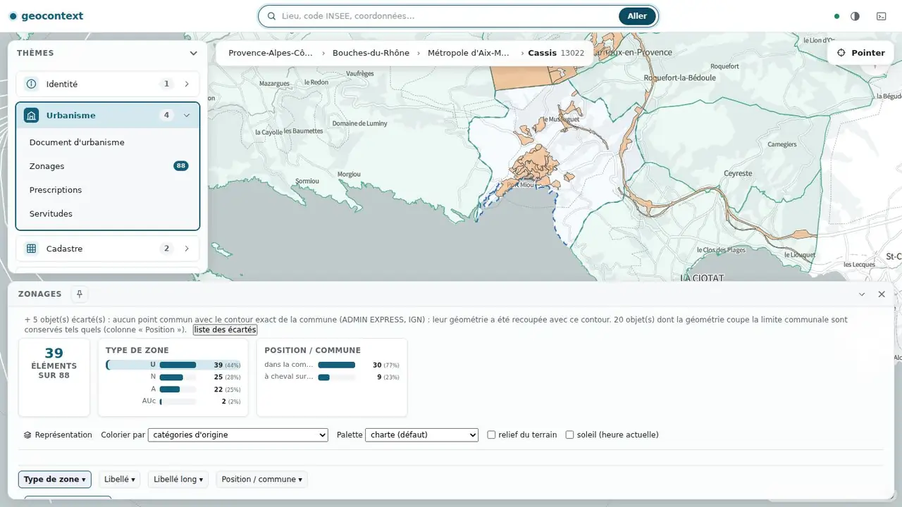
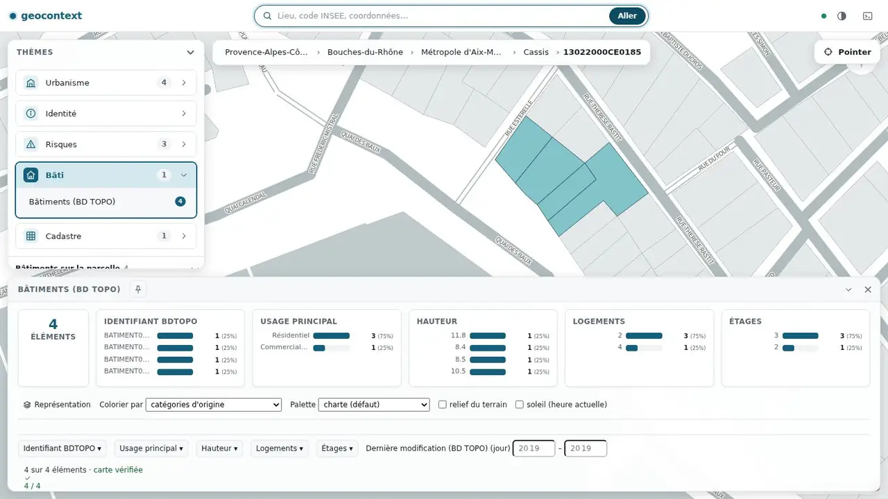
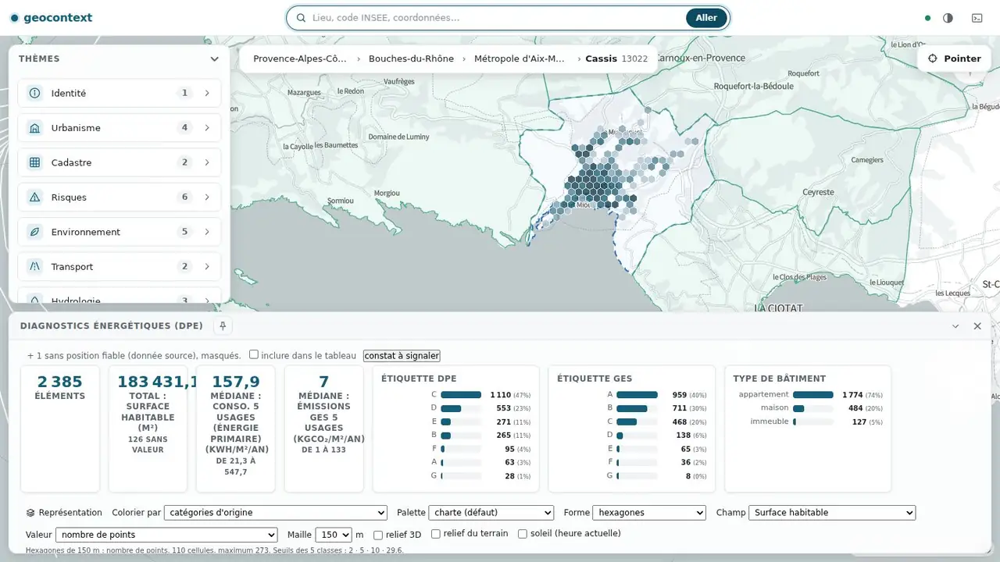
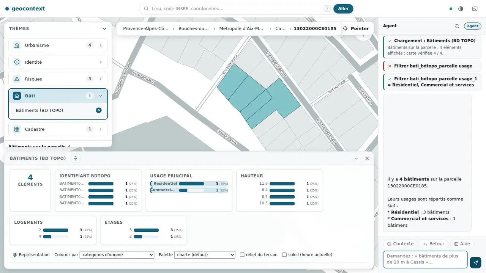

Serveur MCP · Interface web · MCP App · Agent intégré
geocontext
geocontext donne à un assistant, ou à une personne devant une carte, le même contexte territorial : où l'on est, quelles données existent là, lesquelles sont chargées. Les données sont lues à la demande chez leur producteur, principalement sur la Géoplateforme, et ce qui est affiché est relu avant d'être affirmé.
MCPGéoplateformeTerritoireAgentCartePrototype
Un contexte commun, deux modes d'usage, quatre accès.
- 7outils MCP, toujours listés
- 49sources déclarées, 10 thèmes
- 8services interrogés à la demande
- 4accès au même contexte
Le problème de départ
Interrogé sur un lieu, un assistant produit volontiers une réponse plausible mais fausse : un zonage approximatif, un nombre de bâtiments inventé, une limite communale mal placée.
Brancher directement des API géographiques ne suffit pas : leurs réponses sont volumineuses (géométries, milliers d'objets) et mal adaptées à un modèle de langage. Et une réponse du type « c'est affiché sur la carte » n'est vraie que si quelqu'un l'a vérifié.
Ce que ça donne
Captures de l'interface web sur la commune de Cassis (13022) et l'une de ses parcelles, avec les données réelles de la Géoplateforme au moment de la capture (octobre 2026). Les nombres cités sont ceux de ces captures.












Le cycle de navigation
Naviguer
Un nom, un code INSEE, des coordonnées, un identifiant de parcelle : le contexte prend le territoire, son emprise et, pour une parcelle, sa géométrie exacte.
Choisir un thème
Urbanisme, cadastre, risques, bâti, énergie… selon le niveau courant.
Charger une donnée
Le registre trouve les sources, construit la requête, renvoie comptes et description de couche.
Filtrer, comparer
Les opérations d'affichage sont relues sur la carte avant d'être confirmées.
Revenir
Une pile de 20 états permet de revenir en arrière.
Ce qu'il fait, et pourquoi ainsi
Le contexte est l'interface
Naviguer, choisir un thème, charger une donnée : ces étapes sont les mêmes pour une personne qui clique et pour un modèle qui appelle un outil. Le contexte courant détermine ce qui est proposé ensuite.
Des valeurs autorisées plutôt que des noms à deviner
Sept outils, toujours listés. Leurs descriptions et listes de valeurs (thèmes, actions, couches) sont recalculées selon le contexte, ce qui limite les noms inventés. Ils ne disparaissent jamais : certains clients ne relisent pas la liste d'outils en cours de conversation.
Les géométries ne passent pas par MCP
Un résultat contient des comptes, des statistiques et une description de couche (service, couche, filtre, style). La page récupère elle-même les objets chez la Géoplateforme (le serveur garde seulement un cache de tuiles sur disque) : les réponses restent courtes.
Dedans, à cheval, hors : et on le dit
Pour les couches concernées, chaque objet est classé avec sa géométrie exacte et le contour exact du territoire. Les écartés sont listés. Au-delà d'un volume contrôlable, la réponse est un refus explicite, sans total approché.
Afficher, relire, accuser
Le serveur ne sait pas ce qui est affiché. Une opération d'affichage est exécutée par la page, qui relit l'état réel (comptes, couches visibles) et l'accuse ; sans accusé, l'outil renvoie une erreur.
Dire ce qui manque
Une valeur absente est dite absente, un objet sans position fiable est signalé, une source injoignable donne une erreur et non un résultat vide.
Un contexte commun, deux modes d'usage
Le serveur maintient, pour chaque connexion, un contexte de navigation : le territoire, le thème, les données et les couches chargées. Chaque mode a un acteur (le modèle, qui appelle les outils) et une surface (ce qui affiche). Tous lisent et modifient ce même contexte.
Client MCP (acteur, mode client MCP)
Claude Desktop, Cursor ou l'Inspector se connectent en stdio ou en HTTP et reçoivent sept outils dont les valeurs autorisées dépendent du contexte. Le modèle est celui du client.
MCP App (surface, mode client MCP)
Une carte embarquable (ui://geocontext-map) déclarée par les outils, que les clients compatibles peuvent afficher dans la conversation. Elle ne passe pas par le protocole d'accusé d'affichage et n'a pas été testée dans un client réel.
Agent intégré (acteur, mode site web)
Une boucle côté serveur, avec un modèle au choix de l'exploitant (API de type « chat completions »). Mêmes outils, même session que la page.
Interface web (surface, mode site web)
Carte, tableaux, filtres, représentations et export. Elle parle au serveur comme un client MCP, relit ce qu'elle affiche et l'accuse. Son chat accepte aussi des commandes directes, sans modèle.
Deux modes, deux conditions d'exploitation
Ce qui sépare les deux modes n'est pas le transport mais qui fournit l'interface et le modèle. Un client MCP peut aussi passer par HTTP : l'exposition réseau vaut alors pour lui aussi.
| Mode client MCP | Mode site web | |
|---|---|---|
| Qui l'utilise | Une personne avec son propre client (Claude Desktop, Cursor). | Des utilisateurs qui ouvrent une page. |
| Modèle de langage | Celui du client ; le serveur n'en fournit aucun. | Celui de l'exploitant, configuré par variables AGENT_* pour l'agent intégré. |
| Qui supporte le coût du modèle | L'utilisateur. | L'exploitant, avec des bornes de jetons par heure. |
| Serveur | stdio sur le poste (une session), ou HTTP. | HTTP, exposé aux navigateurs. |
| Authentification et réseau | Celles du client ; rien à exposer en stdio. En HTTP, mêmes réserves que le site web. | Aucune authentification aujourd'hui ; CORS ouvert sur /mcp. À protéger avant toute exposition. |
| Ce que le serveur ajoute | Outils, ressources, prompt. | Interface, /agent, /tiles, /liens, accusé d'affichage. |
Pour les équipes techniques
Ce qui peut intéresser une équipe qui voudrait reprendre ou adapter une partie de l'approche.
| Sujet | Ce qui est fait | Où |
|---|---|---|
| Session MCP à état | Un contexte de navigation par connexion : niveau, code, emprise, géométrie exacte (parcelle), thème, couches, historique de 20 entrées. | src/session/ |
| Surface d'outils | Sept outils toujours listés ; descriptions et enum contextuels ; ressources geocontext://… ; prompt geocontext-guide. | dynamic-tools.md |
| Registre de sources | 49 sources déclaratives (niveau, thème, action, point d'accès, champs, filtres, stratégie de pivot : attribut, spatial, repli, composite). Ajouter une donnée = déclarer une source. | src/session/registry/ |
| Exécution | Construction CQL / REST, reprises, tri, transformations de champs, description de couche pour l'affichage côté client. | src/session/executors/ |
| Territoire exact | Décision dedans / à cheval / hors par objet (jsts pour les cas ambigus), lecture complète contrôlée, refus au-delà du volume. | territoire-exact.md |
| Accusé d'affichage | Outils non annoncés ui_poll, ui_ack, ui_state : la surface applique, relit, accuse et publie son état. | guide-technique.md §8 |
| Agent intégré | Boucle côté serveur sur les mêmes outils et la même session ; contexte relu à chaque étape ; résultats d'outils traités comme des données ; bornes de durée, d'étapes et de jetons. | api-http-agent.md |
| Interface web | JavaScript natif sans compilation ; carte par le composant <atlas-bi> (contrat « carte BI 0.3 ») ; comparaison tableau / carte après chaque opération. | web-interface.md |
| Transports | stdio (une session) ou HTTP (une session par connexion, interface web, /tiles, /liens, /agent). | api-http-agent.md |
Essayer
# Client MCP (stdio), après construction locale
{ "mcpServers": { "geocontext": { "command": "node", "args": ["/chemin/vers/geocontext/dist/index.js"] } } }
# Interface web
npm install && npm run build
TRANSPORT_TYPE=http npm start # → http://localhost:3000
# Agent intégré (facultatif)
AGENT_LLM_BASE_URL=… AGENT_LLM_MODEL=… AGENT_LLM_API_KEY=…Les captures de cette page se reproduisent avec scripts/capture-vitrine.mjs ; la page elle-même se régénère avec scripts/generate-vitrine.mjs.
Usages
- Lire un territoire : naviguer de la région à la commune, parcourir les thèmes disponibles, charger les zonages ou les risques, filtrer et lire les écartés.
- Regarder une parcelle : zonage et bâtiments retrouvés par intersection avec la géométrie exacte de la parcelle, comptes relus sur la carte.
- Interroger avec un assistant : un client MCP ou l'agent intégré utilisent les mêmes outils que la page et agissent sur la même session : ce qu'ils font se voit à l'écran.
À savoir avant d'adopter
C'est un prototype. Voici ce qui est vérifié, ce qui ne l'est pas, et ce qu'il faudrait avant un usage plus large.
Prototype. Utilisable sur une instance de test. Pas d'authentification, pas de reprise de service : voir « À savoir avant d'adopter ».
Vérifié
- Appartenance exacte aux niveaux commune, EPCI et département, comparée à un calcul indépendant.
- Parcelle : zonages et bâtiments comparés à un calcul indépendant sur quatre parcelles d'une commune.
- Filtres, représentations et zone visible, joués dans un navigateur, avec relecture de la carte.
- Tests hors réseau (registre, exécuteurs, pivot géométrique) : 58 sur 58. Les tests d'intégration appellent la Géoplateforme réelle et dépendent de sa disponibilité ; l'un d'eux (SIREN d'un EPCI du Doubs) échoue à cause de l'amont.
Non vérifié ou non disponible
- Région : comparaison indépendante non terminée.
- Niveau bâtiment : non navigable (refus explicite).
- DVF : comptage seul ; SIRENE : injoignable depuis l'environnement de test ; certaines sources parcelle : erreur explicite.
- Somme des cellules hexagonales : non relisible via la carte.
- MCP App : non testée dans un client réel, et sans accusé d'affichage (elle n'appelle pas ui_poll / ui_ack).
Avant un usage plus large
- Authentification et gestion des droits (aujourd'hui : aucune).
- Suivi des coûts de l'agent ; version du composant carte à figer.
- Pas de reprise de service : dépendance aux services amont.
À ne pas en attendre
- Aucune valeur juridique : consulter la source officielle pour tout acte (zonage, servitude, transaction).
- Pas de recherche sémantique (recherche par mots-clés uniquement).
Journal
- 25 octobre 2026 : Navigation par parcelle avec géométrie exacte (zonage et bâtiments par intersection), accusé d'affichage de l'agent, refus explicite de la navigation vers un bâtiment, documentation et vitrine.